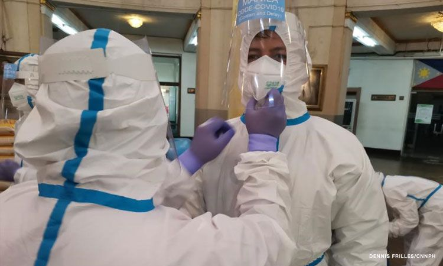

Shortage of Medical Supplies
The rise of the pandemic caused the need for more medical supplies. With more people getting seriously ill because of the COVID-19 virus, most hospitals have reached maximum capacity during the start of the pandemic and when the country reaches peak number of cases. Because of this, those who were affected by the virus but had mild symptoms, were advised to stay at home and rest, and those who were seriously ill were the most prioritized to be admitted to hospitals. Still, many with serious symptoms were not able to get admitted because of the lack of hospital beds in almost all hospitals in their areas. Some still had to travel to neighboring cities/provinces to get admitted to a hospital. Because of this, some hospitals have set up modular tents right outside the building to house additional beds for patients to increase hospital capacity.
During the start of the pandemic, many people started hoarding needed medical supplies such as masks and alcohol. This caused the unavailability of PPE’s and other medical supplies and many were not able to buy these materials for their safety. PPE’s of some brands and materials are still available, but those that have higher qualities are usually scarce and hard to find. This problem was worse during the start of the lockdown and during surges of COVID cases. When the pandemic was still starting, some hospital staff wore garbage bags as improvised PPEs. With this, hospitals were prioritized when distributing and donating PPEs.

The need for enough medical supplies is a must, especially during these times. The shortage of PPE’s and other medical supplies endangers the lives of many people, especially healthcare workers. Healthcare workers become more exposed to the virus and have higher chances of getting infected, which in turn decreases the number of workers making hospitals and other health facilities understaffed. The number of COVID cases also increase because of this. It is important for everyone to wear PPEs when leaving their homes and when going to public places. Wasting masks and face shields will only add to the shortage of medical supplies. Face shields are reusable and so are some types of facemasks such as cloth masks.